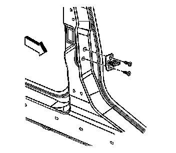
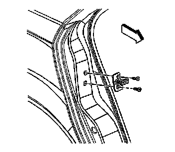

Front Door Striker: Service and Repair
Door Striker Replacement
Removal Procedure

Important: Observe the striker location before removing the striker screws.
1. Remove the door striker screws.
2. Remove the striker.
Installation Procedure

1. Assemble the striker. Position the striker on the lock pillar with the narrow part of the striker facing outwards.
2. Secure the striker screws.
3. Align the door striker. Refer to Door Lock Striker Adjustment (Adjustments) .
Notice: Refer to Fastener Notice .
4. Tighten the striker screws.
Tighten the striker screws to 27.5 N.m (20 lb ft).